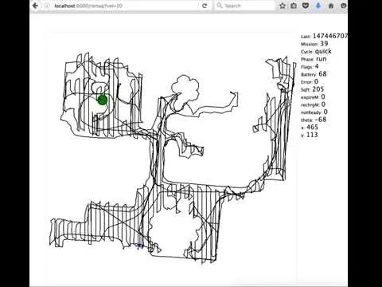

dorita980
- dorita980 is an unofficial Node.js library for reading and controlling Roomba and Braava models listed by its repository. KitAgain has not verified installation, compatibility, or rollback on an exact robot.

- 1/5 dimensions have verifiable sources
- Repository metadata supports only docs/community. Other dimensions remain null, so this discovery stays To verify and is not yet rated.
Candidate route
- Candidate use Evaluate local scripting to read and control an existing robot vacuum
- Hardware scope Roomba i7/i7+, 980, 960, 900, e5, 690, 675, Braava m6, and other models named by the repository
- What is known The repository describes dorita980 as an unofficial Node.js library for controlling multiple iRobot Roomba and Braava models.
- GitHub Unofficial iRobot Roomba and Braava (i7/i7+, 980, 960, 900, e5, 690, 675, m6, etc) node.js library (SDK) to control your robot
- Evidence note Repository metadata/README points to Roomba i7/i7+, 980, 960, 900, e5, 690, 675, Braava m6, and other models named by the repository; this pass confirmed the upstream material only and did not verify installation, compatibility, or rollback on an exact device, so the entry remains an E0 discovery lead.
- Review record PS-dorita980 · 2026-10-23T17:05:02Z
Before you start
- Do not flash, disassemble, or buy parts without installation and recovery material for the exact model, hardware revision, and firmware.
Repository snapshot
- Archived No; not archived when checked
- Last push 2026-02-27T19:23:28Z
- Default branch master
- API license identifier MIT
- The license snapshot does not automatically cover firmware, models, images, trademarks, or third-party components; a recent push does not prove compatibility.